豪州・タスマニア島2
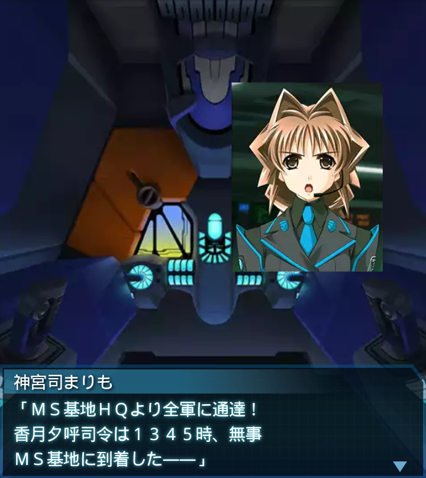
神宮司まりも
「ＭＳ基地ＨＱより全軍に通達！
香月夕呼司令は１３４５時、無事
ＭＳ基地に到着した――」
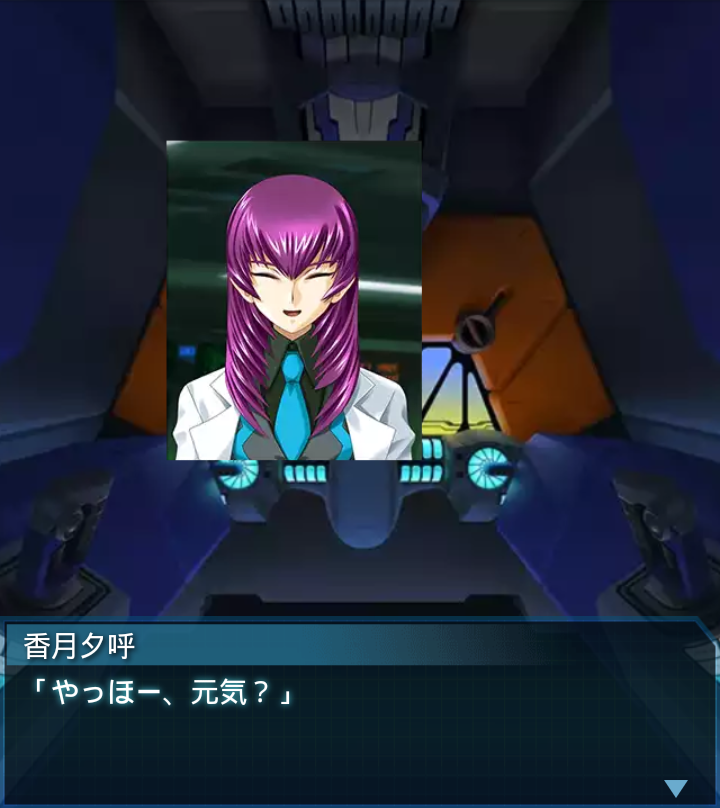
香月夕呼
「やっほー、元気？」
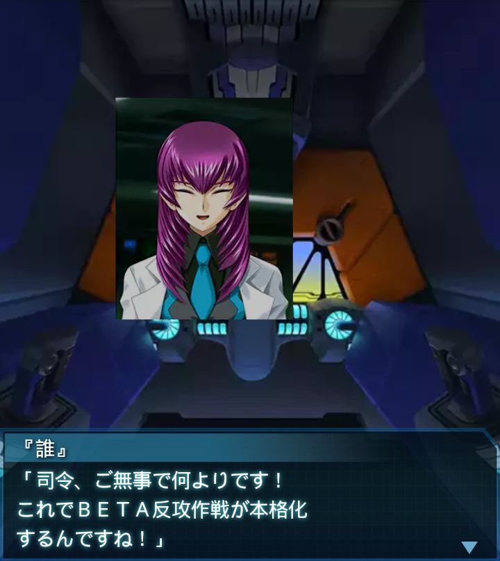
『誰』
「司令、ご無事で何よりです！
これでＢＥＴＡ反攻作戦が本格化
するんですね！」
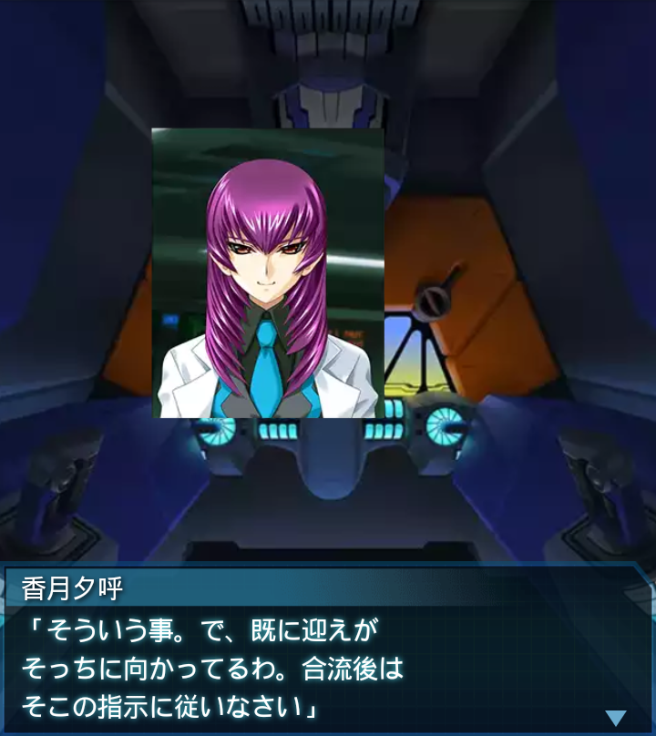
香月夕呼
「そういう事。で、既に迎えが
そっちに向かってるわ。合流後は
そこの指示に従いなさい」
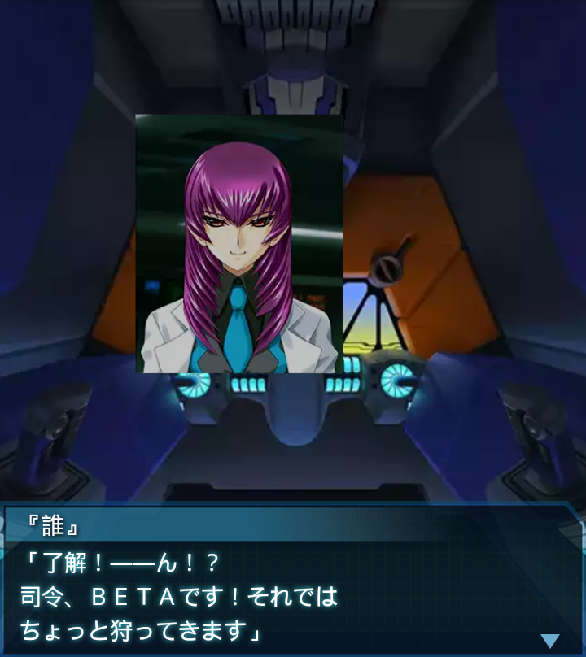
『誰』
「了解！――ん！？
司令、ＢＥＴＡです！それでは
ちょっと狩ってきます」
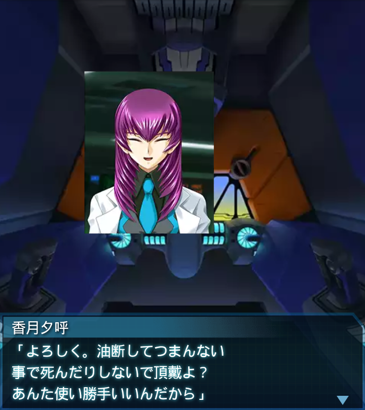
香月夕呼
「よろしく。油断してつまんない
事で死んだりしないで頂戴よ？
あんた使い勝手いいんだから」
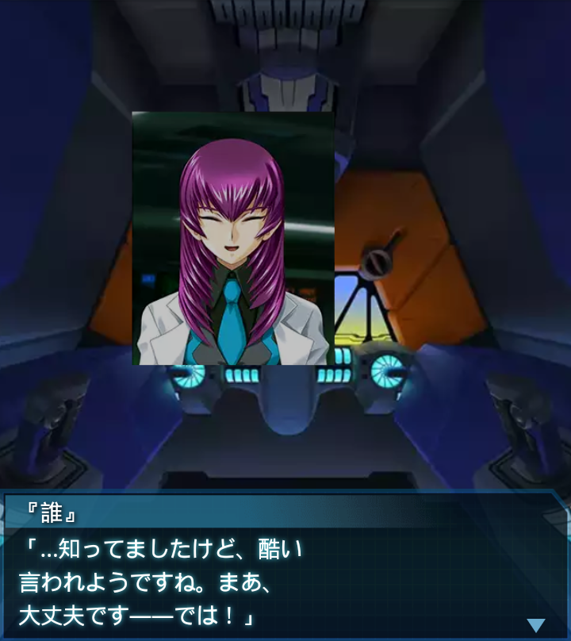
『誰』
「…知ってましたけど、酷い
言われようですね。まあ、
大丈夫です――では！」
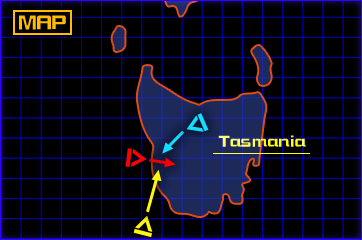
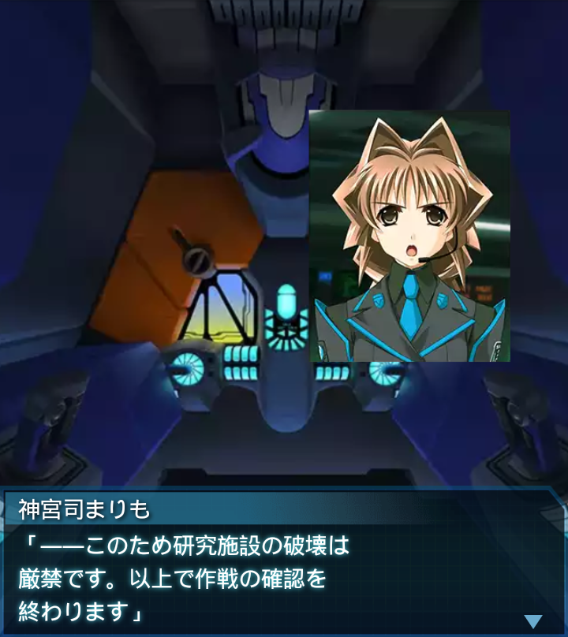
神宮司まりも
「――このため研究施設の破壊は
厳禁です。以上で作戦の確認を
終わります」
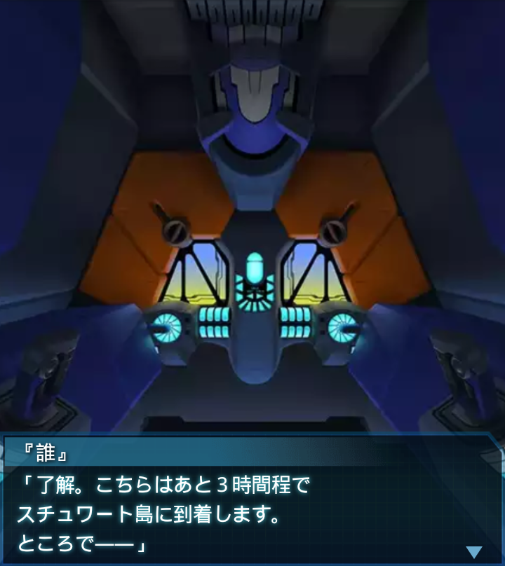
『誰』
「了解。こちらはあと３時間程で
スチュワート島に到着します。
ところで――」
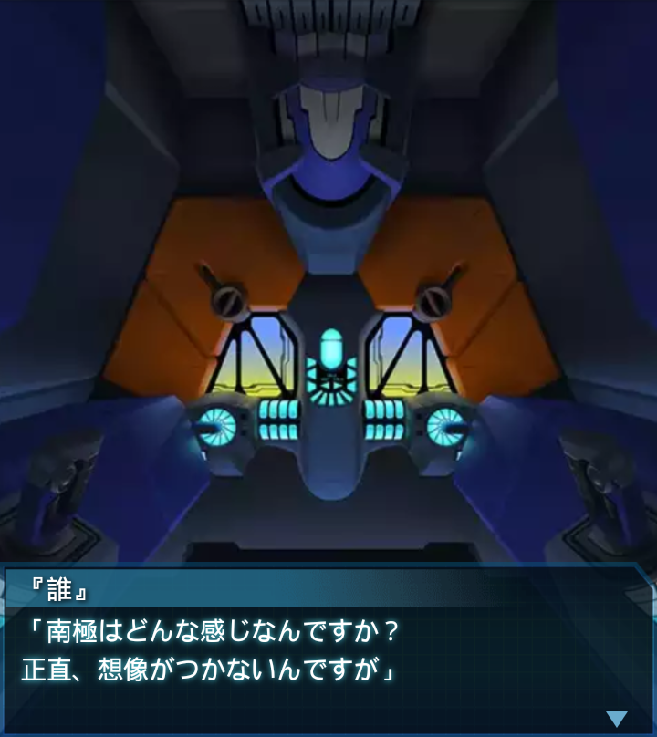
『誰』
「南極はどんな感じなんですか？
正直、想像がつかないんですが」
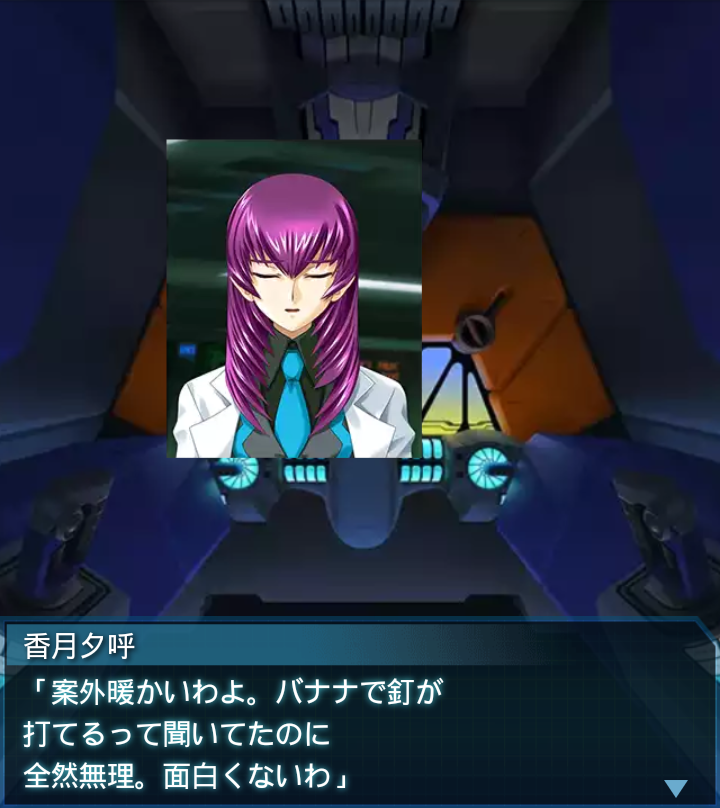
香月夕呼
「案外暖かいわよ。バナナで釘が
打てるって聞いてたのに
全然無理。面白くないわ」
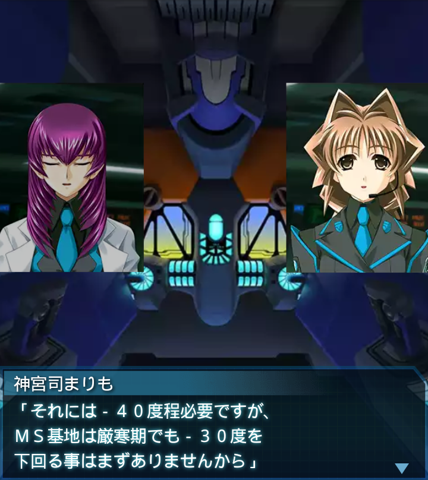
神宮司まりも
「それには－４０度程必要ですが、
ＭＳ基地は厳寒期でも－３０度を
下回る事はまずありませんから」
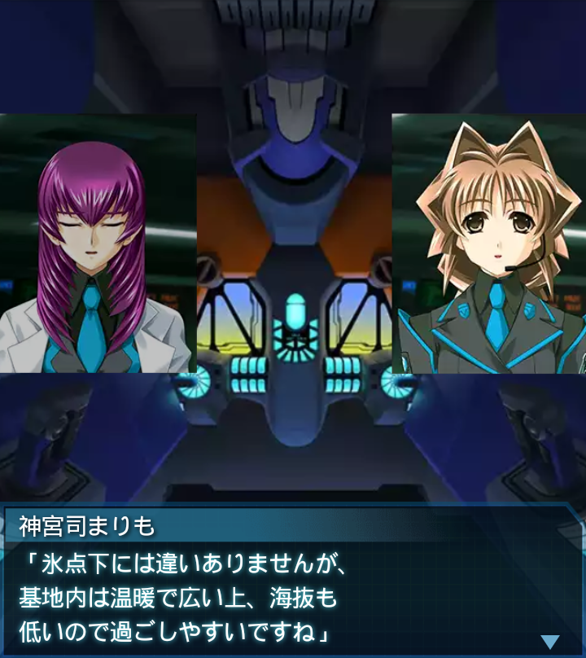
神宮司まりも
「氷点下には違いありませんが、
基地内は温暖で広い上、海抜も
低いので過ごしやすいですね」
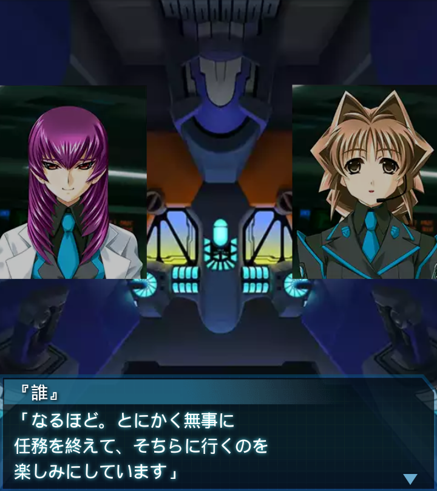
『誰』
「なるほど。とにかく無事に
任務を終えて、そちらに行くのを
楽しみにしています」